OTY2 SAR Vehicle Structure Mechanism Atlas
Review-only visual cards. Yellow polygons are posthoc SAR GT references, not proposed annotations.
1. possible compact vehicle structure
PAIR_GM_RM017_o184_s383_oty1t_obj_GM_RM017_bytetrack_bt_0014
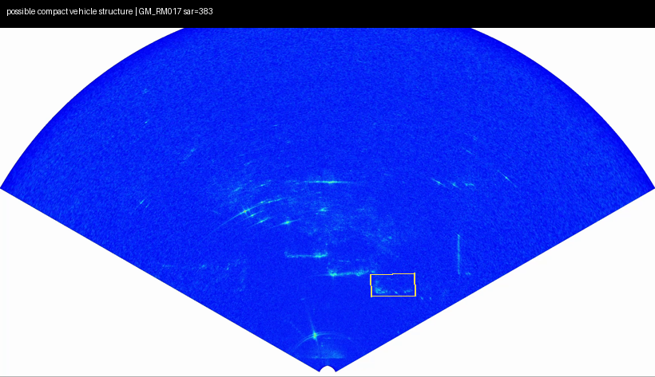
Look for: whether compact response is vehicle body or compact clutter
Question: Can compact SAR evidence support weak/posthoc association?
2. possible multi-peak vehicle structure
PAIR_GM_RM017_o153_s319_oty1t_obj_GM_RM017_bytetrack_bt_0008
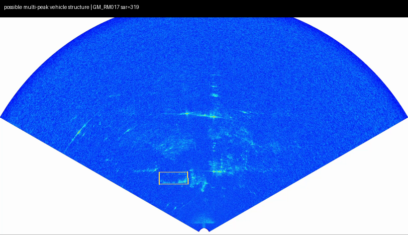
Look for: whether nearby peaks form one vehicle body or neighboring scatterers
Question: Can a peak group be composed before association?
3. possible range-spread vehicle structure
PAIR_GM_RM019_o13_s27_oty1t_obj_GM_RM019_bytetrack_bt_0005
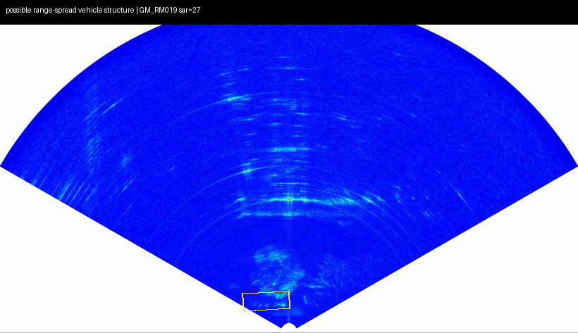
Look for: whether radial spread is vehicle body, sidelobe, or support artifact
Question: Does range-spread structure need a separate composition rule?
4. possible azimuth-spread vehicle structure
PAIR_GM_RM017_o165_s343_oty1t_obj_GM_RM017_bytetrack_bt_0010
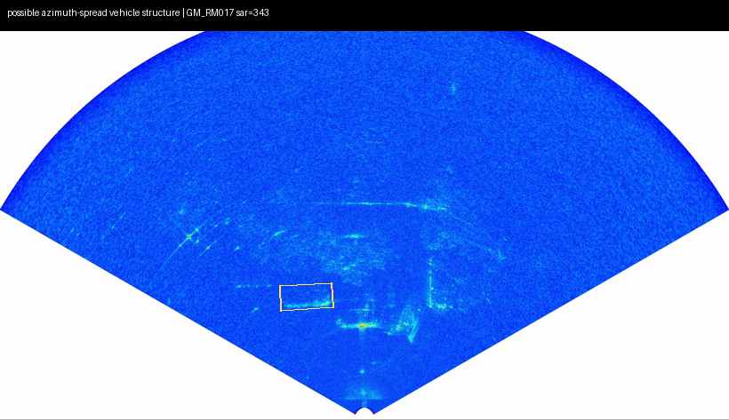
Look for: whether spread is vehicle width/cross-range response or sector overlap
Question: Does azimuth-spread explain high azimuth-shift controls?
5. possible stable vehicle tube
PAIR_GM_RM017_o165_s343_oty1t_obj_GM_RM017_bytetrack_bt_0010
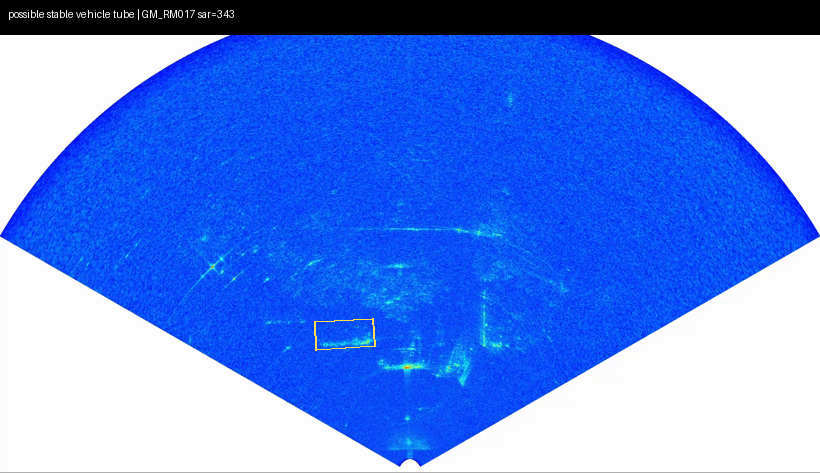
Look for: whether the tube drifts like a target or persists like background
Question: Can temporal persistence be split into vehicle-like versus background?
6. diffuse / reject exemplar
PAIR_GM_RM019_o15_s31_oty1t_obj_GM_RM019_bytetrack_bt_0005
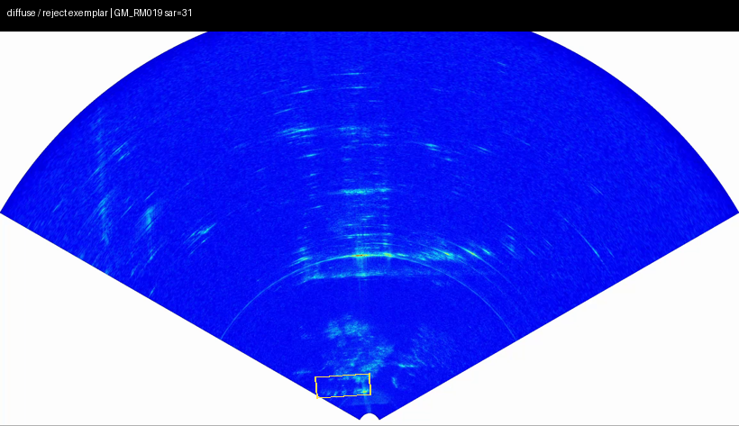
Look for: whether support contains only diffuse background
Question: When should SAR structure remain isolated or rejected?
7. background-stable wrong-frame exemplar
PAIR_GM_RM019_o13_s27_oty1t_obj_GM_RM019_bytetrack_bt_0005
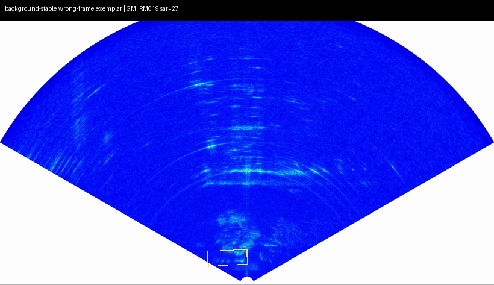
Look for: whether same scene structure persists across wrong frames
Question: Why does wrong-frame remain high?
8. neighboring-object wrong-object exemplar
PAIR_GM_RM017_o149_s310_oty1t_obj_GM_RM017_bytetrack_bt_0008
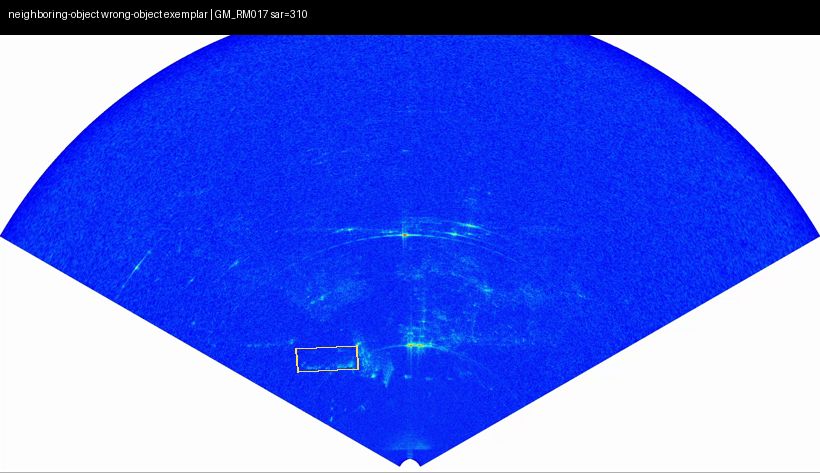
Look for: whether graph components overlap neighboring objects
Question: Why does wrong-object remain high?
9. support-overlap azimuth-shift exemplar
PAIR_GM_RM017_o165_s343_oty1t_obj_GM_RM017_bytetrack_bt_0010
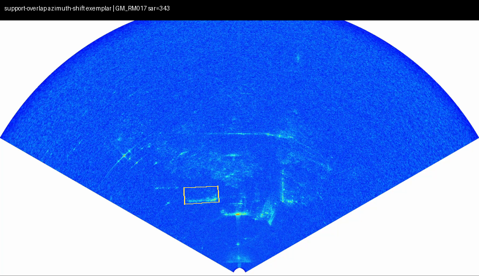
Look for: whether broad azimuth support contains the same component after shifts
Question: Why is azimuth-shift still high?
10. statistics say vehicle-like but visual review likely needed
PAIR_GM_RM017_o165_s343_oty1t_obj_GM_RM017_bytetrack_bt_0010
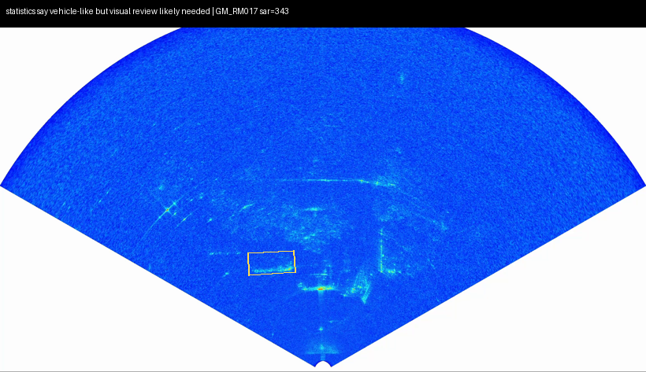
Look for: whether one component is visually dominant enough for review
Question: Should this be weak, review, or posthoc candidate?
11. case where GT is inside support but association should remain weak
PAIR_GM_RM017_o165_s343_oty1t_obj_GM_RM017_bytetrack_bt_0010
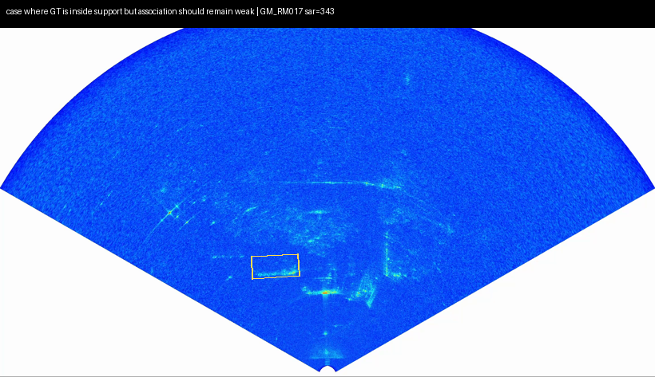
Look for: whether GT coverage hides object-time ambiguity
Question: Why coverage is not localization or identity truth?
12. SAR-only morphology reference exemplar
GTREF_GM_RM017_s302_96
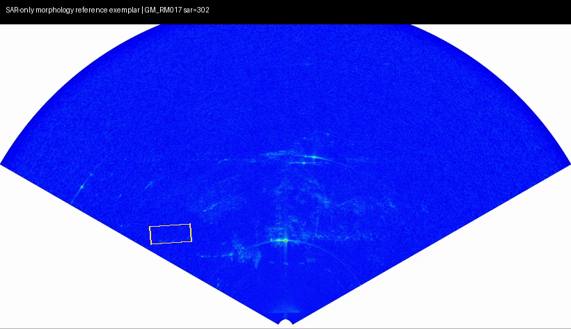
Look for: SAR morphology only; no optical-SAR correspondence claim
Question: What SAR-side structure should be used as reference without mixing pools?
13. GM_RM011 waiting object-stream reference exemplar
GTREF_GM_RM011_s0_336
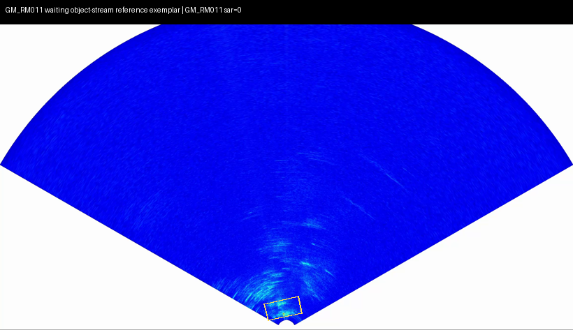
Look for: SAR morphology only; no optical-SAR correspondence claim
Question: What SAR-side structure should be used as reference without mixing pools?